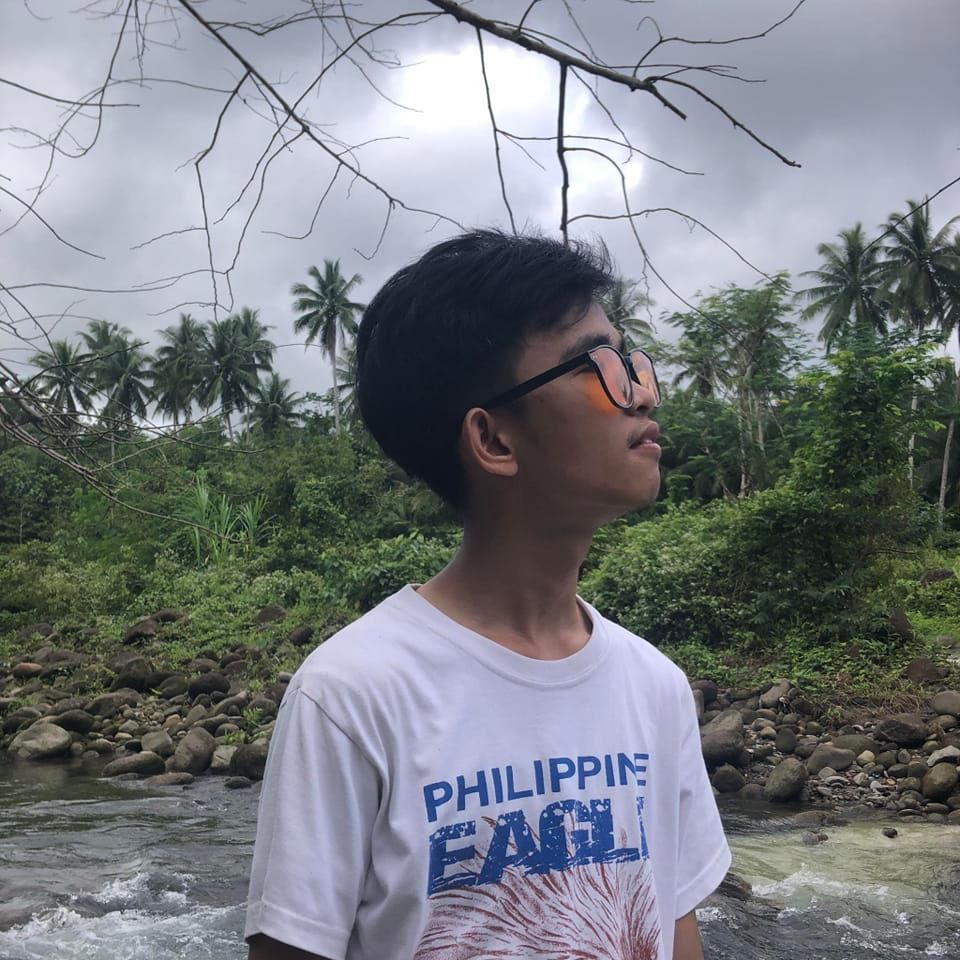

Jan Mellenium Francisco | WDD 130
I am a working student who are living alone in the center or Metro Manila.
is such a really hard life top begin with but I am still doing what I can to survive alone no matter what.
I am currently working as Transaction Database Writer/Admin for React News, a news title of Green Street Advisors UK.
I have been a member of The Church of Jesus Christ of Latter day Saints for about seven years now.
I am the only member in my family it is also the reason why my family disowned me.
Yet, I am still trying to be the best version of myself working in Manila Philippines Temple twice a week.
As a mental health advocate I want to be more open of what my true challenges right now.
I am suffering from depressive disorder and clinical anxiety.
I am hoping that we can all have best experience this semester.